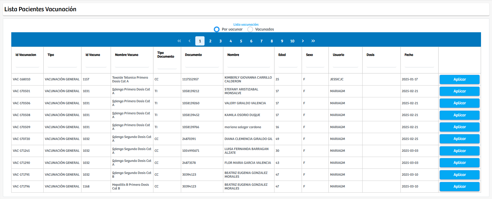
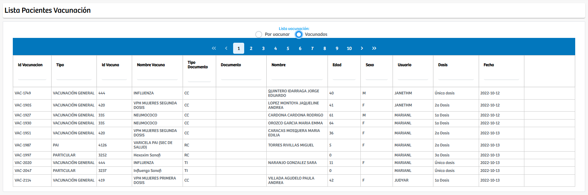

Modulos Sas-Web
Funcionalidades
Aplicación Vacunas
El módulo Aplicación Vacunas permite gestionar de manera clara y ordenada el proceso de administración de vacunas a los pacientes. Al ingresar, el sistema presenta una tabla con los registros correspondientes a todas las vacunaciones que están pendientes por ser aplicadas. Estos registros muestran información relevante como el nombre de la vacuna, el paciente, la fecha programada y otros datos administrativos que facilitan el seguimiento del proceso.
Dentro del apartado Por vacunar, únicamente se listan los pacientes que tienen una vacunación registrada pero que aún no ha sido aplicada. Es importante destacar que para que una vacuna pueda ser administrada, el registro asociado debe contar con el atributo Dosis; si este campo no existe o está vacío, la aplicación no puede realizarse y el sistema no habilitará la acción correspondiente. Por este motivo, las vacunas que aparecen en esta sección no cuentan aún con la información necesaria para completar el proceso.
En el apartado Vacunados, el sistema muestra todos los registros de pacientes que ya han recibido su vacuna. Esta vista permite consultar fácilmente el historial de vacunación, incluyendo información como la dosis aplicada, la fecha de administración y el usuario que realizó el procedimiento. Esta sección funciona como un registro consolidado que permite validar o rastrear cualquier proceso de vacunación realizado previamente.
Este módulo facilita la trazabilidad completa del proceso de aplicación de vacunas, permitiendo identificar cuáles están listas para administrar, cuáles requieren actualización de información y cuáles ya se encuentran completadas.